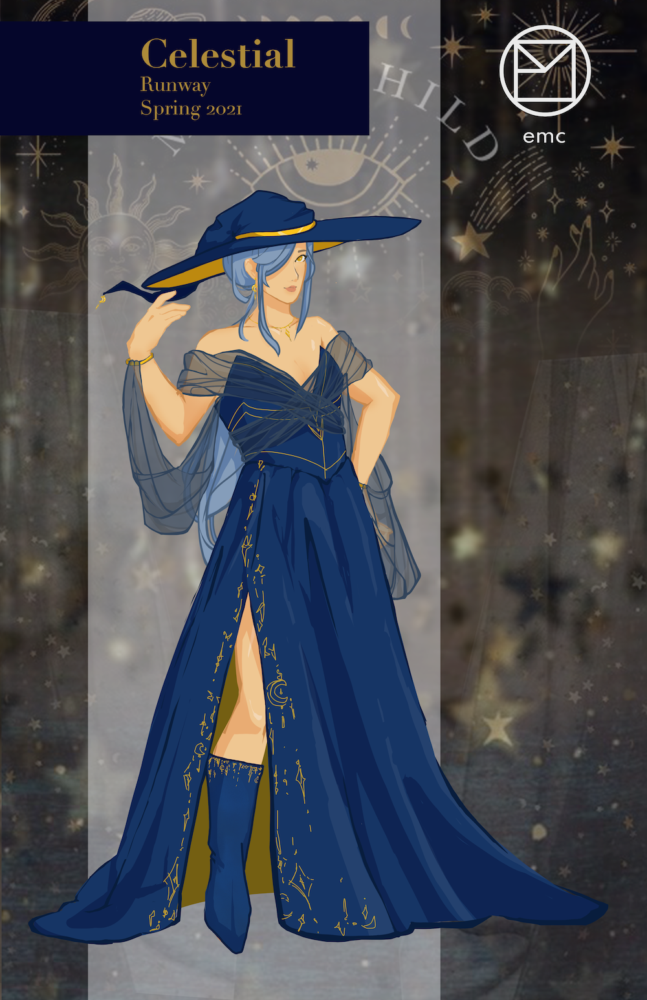
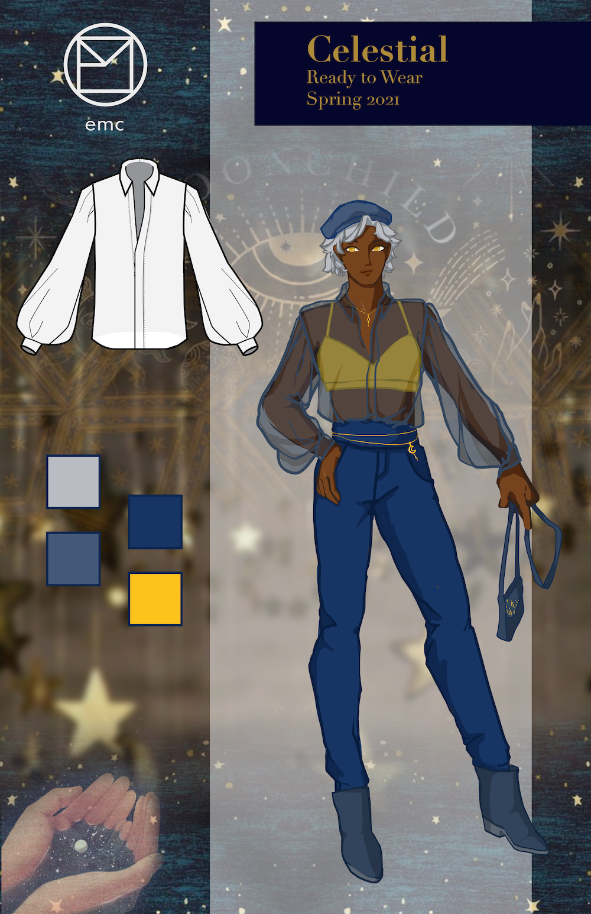
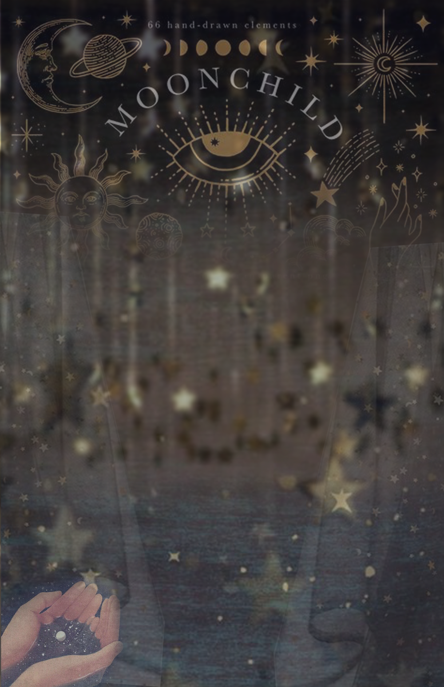
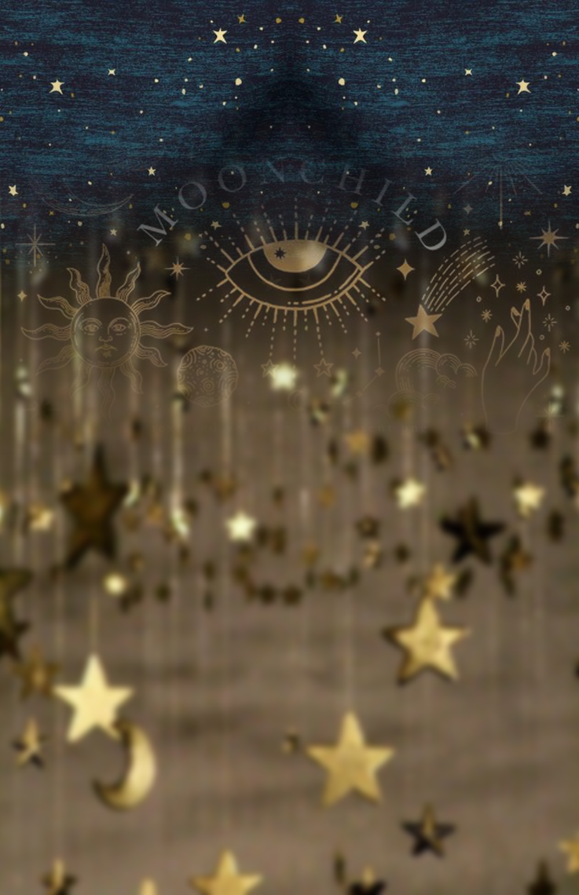

runway to reality


This project was for a fashion drawing class, with the main objective being to design a runway outfit + a retail counterpart. First, we had to construct moodboards for the theme/idea, then the outfit and brand of our own. This was one of the first digital projects of the class, and helped expand my digital drawing skills.


Above are the two corresponding moodboards. I brought together the images and drew the figures using Adobe Photoshop, and created the ready-to-wear flat in Illustrator.